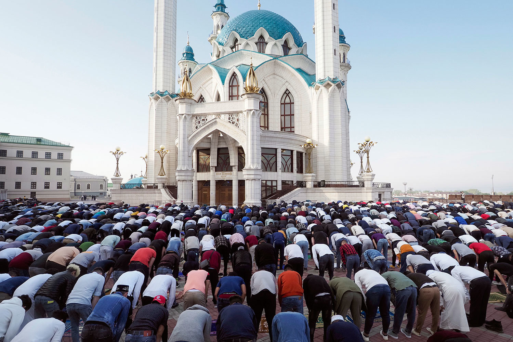

Народная татарская культура
Интересные слова и картинки — чтобы знать и понимать.
Кто такие татары
Татары — тюркский народ России и постсоветских стран, крупнейшее национальное меньшинство, ареал: Европейская часть России, в основном Поволжье и Приуралье, а также Сибирь, Казахстан, Средняя Азия, СУАР, Дальний Восток, Финляндия, Литва, Афганистан, Иран, Пакистан, Крым. Являются вторым по численности народом в Российской Федерации после русских. Делятся на три основные этнотерриториальные группы: волго-уральские, астраханские и сибирские. Также есть многочисленная группа иранских и афганских татар. Татары составляют более половины населения Республики Татарстан (53,2 % или более 2 млн чел. по переписи 2010 года) и более четверти населения Республики Башкортостан (25,4 % или более 1 млн чел. по переписи 2010 года). Татарский язык относится к кыпчакской подгруппе тюркской группы алтайской семьи языков и делится на три диалекта: мишарский (западный), казанский (средний) и сибирский (восточный). По религиозному признаку в основном мусульмане-сунниты, также есть небольшая группа православных (кряшены).
История татар
Предки современных татар были кочевниками и проживали совместно с разными племенами. По этой причине у народа попросту нет единого этнического корня. Здесь можно проследить линии гуннов, булгар, финно-угров и славян.
Теорий о происхождении и развитии этноса несколько. Самая достоверная называет первым государством прототатар Волжскую Булгарию, которую основали потомки тюрков в VII веке. Государство в Среднем Поволжье процветало вплоть до захвата Золотой Ордой в XIII столетии. Проиграв на поле боя, булгары со временем победили монголов в этническом плане — ассимиляция прошла в их пользу, и почти ничего монгольского в быту и культуре не осталось. Однако появилось общее название «монголо-татары», которое отождествило завоевателей и покорённые народы.
На пороге распада Орды бывшая Волжская Булгария в XIV веке превратилась в несколько самостоятельных ханств: Казанское, Сибирское, Крымское, Астраханское и Ногайскую Орду. Так появились три ключевые этногруппы татар с некоторыми различиями во внешности: сибирские, астраханские и волго-уральские (или казанские). Город Казань в одноимённом ханстве стал политическим центром Поволжья. В отличие от большинства татар часть местной знати хотела забыть кочевое прошлое, стремилась развивать торговлю и жить в мире с набирающей мощь Россией. Однако уже к XVI веку Московское княжество завоевало все ханства, и первым стало как раз Казанское.
В составе России татар на протяжении двух столетий принуждали отказываться от ислама в пользу христианства. Знать, которая быстро поменяла религию, приблизилась к верхушкам власти и дала начало многим известным дворянским родам: Годуновым, Юсуповым или, например, Державиным. Те, кто отказывался, платили особую подать и лишались имений с крестьянами. Это приводило к протестам, восстаниям и переселениям. Конец гонениям во второй половине XVIII века положила Екатерина II, которая разрешила мусульманам исповедовать ислам и строить мечети. Татарский народ занимался торговлей на Волге, стабильно привлекался на дипломатическую и военную службу.
Следующее знаковое событие произошло в 1920-х: была образована Татарская Автономная Советская Социалистическая Республика, или ТАССР. В эпоху Советов татары активно переселялись из деревень в города, а в период Великой Отечественной войны сражались на всех участках фронта.
Наконец, полный суверенитет и государственность этнос получил в начале 1990-х — именно тогда на картах появилась Республика Татарстан.
Быт татар
У татарского народа есть формировавшийся веками семейный уклад. В доме отец всегда главный, его воля — закон. Следующая по значимости роль отводится жёнам и матерям. Детей в татарской семье всегда учат помогать нуждающимся и с уважением относиться к старшим. Дочерей с малых лет также готовят к будущему замужеству — приучают заниматься хозяйством и следить за порядком в доме.

Исторически образ жизни татар предполагал подкованность во множестве практических навыков и умений, владение ремёслами. Например, женщины издревле занимались на дому ткачеством, плетением и вязанием. А каждый татарин-крестьянин мог самостоятельно произвести простейшую обработку шкур животных для бытовых нужд. Выделка кожи в целом считается одним из главных татарских ремёсел. На рубеже XIX–XX веков огромной популярностью пользовалась узорчатая обувь, богато украшенная орнаментами. Её продавали по всей России и даже поставляли за рубеж — в Англию, Францию. Татары изготавливали и продавали свои знаменитые туфли и сапоги из юфти и сафьяна — особым образом обработанной и окрашенной кожи.
Из других ремёсел в ходу было плотничество, обработка металла и камня, золотошвейное дело. Ещё с древних времён татары также активно занимались торговлей — во многом благодаря выгодному расположению Волжской Булгарии между странами Запада и Востока. В хозяйстве главная роль была отведена земледелию. Ещё до прихода Золотой Орды булгары выращивали столько зерновых, что снабжали хлебом в том числе русские княжества — это даже нашло отражение в «Повести временных лет». Также татары активно занимались садоводством, скотоводством, бортничеством.
Жилище татар
Традиционным домом у этноса была не юрта или кибитка, как у других тюрков, а деревянная изба. Её делили на две части шторой, а с XIX века — перегородкой. В мужской половине избы принимали гостей, занимались ремёслами, трапезничали, а в женской чаще всего находилась кухня с печкой. Спали на нарах — длинных дощатых настилах вдоль стены.
В татарском жилище есть два обязательных атрибута. Первый — шамаиль на стене. Это любой небольшой отрывок из Корана, помещённый в рамку и считающийся украшением интерьера. Первоначально их изготавливали с помощью техники росписи по стеклу, а в дальнейшем — с применением вышивки, литографии и других техник. Второй атрибут жилья — сундуки красного и зелёного цвета, в которых татары по традиции хранили приданое. Чем богаче хозяева, тем больше сундуков. Периодически поверх также клали покрывала и использовали в качестве кроватей. А вот чего точно нельзя увидеть в избе татарина, так это изображений людей и животных: ислам не позволяет. Вместо них жилище украшали растительными мотивами, в основном в виде вышивки.
Люди побогаче строили себе двухэтажные усадьбы. Первый этаж обычно отводился под кухню и комнату для прислуги, а хозяева располагались на втором. Такая усадьба второй половины XIX века сохранилась в Казани на улице Каюма Насыри. Речь про дом крупного торговца Бурганутдина Муллина, в стенах которого сейчас работает музей. Здесь можно перенестись в прошлое и прикоснуться к традициям татар: оценить воссозданные интерьеры жилища, примерить национальные наряды, прогуляться по внутреннему двору с пасекой и небольшим огородом.
Одежда татар
Ткани насыщенных цветов, сложные орнаменты, обилие украшений — всё это про татарский костюм. Мужчины ходят в рубахе-тунике до колен (её по традиции никогда не подпоясывают) и в широких, чаще всего полосатых тканевых шароварах. Роль верхней одежды в тёплый сезон выполняет камзол, часто безрукавный. Зимой татарин надевает бешмет, утеплённый шерстью, или чабулы-тун — шубу из натурального меха, которая дополнительно покрывается тканью. Эти элементы гардероба уже подпоясываются. Дома татары носят тюбетейку в орнаментах. Чем мужчина моложе, тем пестрее головной убор. Уличные шапки — меховой бурек или, например, чалма — надеваются прямо поверх тюбетейки. Традиционные украшения в образе татарина — перстни и красивая пряжка для пояса.
У женщин основной элемент национального гардероба — тоже туника, но длиннее: почти до щиколоток. Она может быть украшена лентами, воланами и кружевом. Под рубаху обязательно надевается нагрудник, который скрывает распахивающийся вырез. Если в наряде есть штаны, они не полосатые, а однотонные. Верхняя одежда — такая же, как у мужчин, но декорированная мехом или вышивкой. Вместо тюбетейки девушки носят вязаный калфак с кисточкой на верхушке — он достигает в длину 70 сантиметров, поэтому складывается на голове пополам. Если женщина замужем, она должна скрыть ещё и волосы, шею и плечи. Для этого есть трёхсоставные головные уборы: из волосника, покрывала и верхней шапки. Последнюю может также заменить платок. Украшений в женском образе обычно много, ведь по ним мусульмане судят о материальном состоянии главы семейства — мужчины. Популярнее всего серьги, которые татарки носят с ранних лет. Некоторые украшения не только красивы, но и практичны. Например, сюда относится лента-перевязь через плечо со специальными кармашками для текстов из Корана.
Традиции татар
Пожалуй, главная — это гостеприимство. При визите гостя татары по традиции расстилают праздничную скатерть дастархан и подают самые лучшие угощения: обычай требует обязательно накормить пришедшего в дом. Это может быть как полноценный обед или ужин, так и бесконечно долгое чаепитие со сладостями.
Благодаря активной торговле с Азией булгары довольно рано открыли для себя чай. Сейчас он считается традиционным и самым популярным татарским напитком. Наливают его в пиалы. Если вдруг чай остыл, гостю меняют посуду: холодный пить нельзя. В качестве угощения подают чак-чак, сухофрукты, мёд, а также кабартму — татарские пышки из дрожжевого теста. С XIX века без чая не обходится ни один праздник, в том числе и свадьба.
Бракосочетание у татар тоже сопровождается строгими традициями. Например, каждая девушка с юных лет начинает учиться шитью, чтобы обеспечить себя приданым. Будущего мужа татарка может не знать практически до последнего: о заключении брака часто договариваются родители. А ещё свадьба обязательно сопровождается интересным обрядом никях. Невеста готовит для всей семьи будущего супруга мини-пельмени кияу — если они достаточно маленькие, чтобы пройти через обручальное кольцо, то девушка считается отличной хозяйкой.
Что касается праздников, у татар их два вида: мусульманские религиозные (гает) и народные (байрам). Конкретные даты проведения и тех и других были связаны с хозяйственным циклом: началом или окончанием полевых работ, посевов и так далее. Также на точное время празднования могла влиять погода и решение совета старейшин.
К религиозным праздникам относится Ураза-гаете — мужчины всех возрастов отправляются на утренний намаз, а женщины готовят завтрак, — и ритуал жертвоприношения Корбан-гаете, после которого старались угостить мясом всех вокруг.
Народные праздники, как правило, отмечаются весной и летом. Главный из них — Сабантуй, или «Праздник плуга». В старину он сопровождал начало посевных работ. Крестьяне мылись в бане, чтобы очиститься перед выходом в поле, а в пашню бросали яйцо, чтобы зёрна были такими же крупными. Сабантуй отмечался песнями, конными и беговыми состязаниями, борьбой. Победители народных игрищ получали награды: полотенца, украшенные национальной вышивкой, над которыми девушки трудились зимними вечерами. Сегодня многие традиции сохранились, а в современную программу празднований добавлены концерты и ярмарки. Праздник в наши дни стал общим для татар по всей стране. Правда, сейчас им отмечают не начало посевных работ, а их окончание.

Зимой популярен праздник Каз-өмәсе, или «Гусиное перо». В старину праздник отмечался чуть раньше (поздней осенью) и заключался в коллективном ощипывании гусей, чтобы заготовить птицу, пух и перо на зиму. В ритуале принимали участие все молодые девушки: они демонстрировали старшим хозяйкам своё мастерство, чтобы заслужить похвалу. А заодно общались с юношами: молодые люди могли присмотреться друг к другу, чтобы в дальнейшем создать семью. После обеда ели оладьи на гусином жиру и пили чай. Сейчас из Каз-өмәсе практически пропал «гусиный» элемент: ощипывание птицы заменили гулянья, праздничные посиделки и исполнение народных песен.